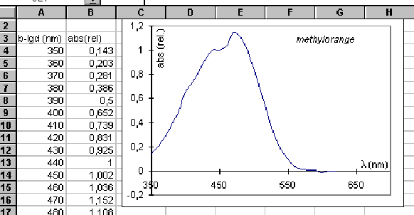

De fleste spektrofotometre har en skriverudgang, hvor absorbansen udlæses som en spænding. Vha. Datalyse, og multimeter med indbygget RC232-Interface, er det særdeles let at lave pæne spektre i det synlige område.
Det eneste krav til programmet er, at man kan måle med passende tidsintervaller, eller på anden vis måle, når man ønsker. De målte værdier overføres til et regneark, f.eks. Excel, som er det, jeg har brugt.
Jeg har afprøvet metoden vha. programmet Datalyse, og et DMI-24 multimeter fra IMPO. Spektrofotometeret var et WPA S106 fra Søren Frederiksen.
Der er sikkert andet lige så fremragende udstyr på markedet.
Den enkleste metode er at indstille programmet til at måle med passende mellemrum, f.eks. for hver 10 sekunder. Spektrofotometeret og prøven klargøres, og man indstiller apparatet på den bølgelængde, man ønsker at starte på, f.eks. 350 nm.
Nu startes målingerne, og imellem hver måling flytter man bølgelængde-vælgeren et fast interval (10 nm er meget passende), og der er også tid til at nulstille på referenceprøven, hvis det er nødvendigt.
Måledata består af en række samhørende værdier af tid og spænding, hvor spændingen er et relativt mål for absorbansen. Måledata overføres nu til Excel-regnearket, hvorefter tids-værdierne skal omsættes til bølgelængder. Dette er særdeles nemt med Excel. Man indtaster blot de to første bølgelængdeværdier på deres respektive pladser, markerer disse, og vha. »udfyldningshåndtaget« (det lille firkantede felt i nederste højre hjørne af de markerede celler), »trækker« man de korrekte værdier ned med musen, mens venstre musetast holdes nede.
Har man startet med 350 nm og dernæst 360 nm, så vil bølgelængdeværdierne vokse med 10 nm hver gang man går en række ned. Så er der kun tilbage at tegne grafen i regnearket. Kurven kan også tegnes direkte i Datalyse, men jeg finder Excel nemmere at gå til netop i dette tilfælde.
Elever, der er fortrolige regneark, og det er de fleste af vore elever på kemi-valghold, kan med en kort instruktion fra læreren optage et spektrum i hele det synlige område på 15 minutter, inkl. databehandling og grafudskrift. Det eneste man skal være opmærksom på, er ikke at overstige spektrofotometerets maksimale udlæsning, så bliver kurven flad et stykke, men det er et minimalt problem.
Metoden kan selvfølgelig også bruges på spektrofotometre med motor, men så er man nødt til at lave en omregning af tid til bølgelængde, som tager hensyn til apparatets scan-hastighed. Det er ikke umiddelbart så let tilgængeligt som den manuelle metode.
Er man mindre fortrolig med Excel-regneark, har Helge Blom Andersen, Kolding Amtsgymnasium lavet nogle meget instruktive noter, som er brugt på flere modul-3 kurser.
Nedenfor er tegnet spektret for methylorange, og en del af regnearket er vist.

Steen Ellemose, Herning Gymnasium